Lecture 9「Recap & Current Trends」日本語学習ガイド【講義スライド24枚付き】
Transformerの最初の一式から、学習・推論・agent・評価を復習し、Vision Transformer、VLM、拡散型LLM、データ・コスト・hardware・安全性までを一つの因果の流れとして読む、Stanford CME295最終回の学習ガイド。
3行サマリ
- Lecture 1〜8の内容は、token表現からattention、規模化、学習、reasoning、外部接続、評価へ進む一つの因果の連鎖として理解できる。
- ViTとVLMは画像をvector列としてTransformerへ渡し、拡散型LLMは画像生成の反復的な復元をtextへ持ち込む。
- 今後の焦点は最高scoreだけではなく、data品質、quality/cost、hardware、安全なagent、継続学習など複数のtrade-offを同時に動かすことにある。
token、attention、LLM学習、reasoning、RAG、評価をつなぎ直す。
同じTransformerをViTとVLMへ広げ、画像を扱う流れを追う。
画像diffusionの発想をtext生成へ戻し、逐次生成の制約を問い直す。
data、cost、hardware、応用、安全性、学び方へ着地する。
1. 最終回のメニュー：復習を「部品表」ではなく因果に戻す
まず講義全体の順序を確認する。前半の復習は新情報を足すためでなく、後半のViTと拡散LLMがどの既習概念を借りているかを見失わないためである。講師は「recap、2025年のtrend、closing thoughts」の三部構成を提示した。
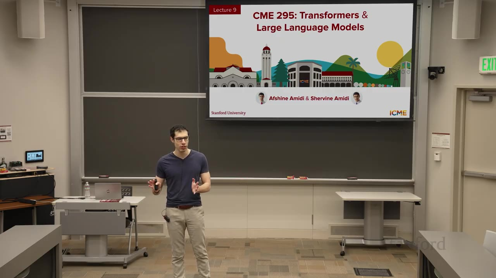
次の表は、Lecture 1〜8を番号順ではなく、後半の新規トピックへ何を受け渡すかで三つにまとめたものだ。
| 復習の連鎖 | 中心の問い | 後半で再利用される先 |
|---|---|---|
| L1–2 | vector列をどう関連付けるか | 画像patch、2D位置 |
| L3–6 | 大規模生成をどう学習・推論するか | 拡散生成の比較 |
| L7–8 | 知識・行動・品質をどう外部化するか | 安全な実運用 |
この表は回ごとの目次ではなく依存関係である。後半の「新しいtrend」は前半の土台なしには評価できず、逆にtrendは前半の設計選択が未完成であることを示す。
2. tokenからattentionへ：Transformer以前の問題を思い出す
全体地図の最初に戻り、Transformerが解いた問題を復元する。画像をtokenにできる理由を理解するには、text tokenも意味を持つ文字列ではなく、計算のためのvectorとして扱われることから始める必要がある。
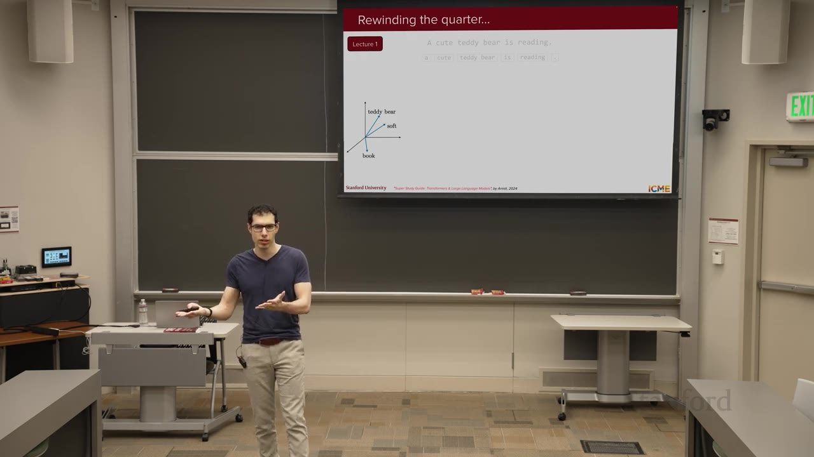
講義の要点。subword tokenizerは単語を固定語彙に丸ごと閉じず、語根や接辞を再利用する。word2vecは周辺語予測でembeddingを学ぶが、同じ語をどの文脈でも同じvectorにしやすい。RNNは順に状態へ畳み込むため、遠いtokenを直接結びにくく、並列化もしにくい。
式は「各tokenが全tokenを同じ強さで読む」ことを意味しない。Queryごとに異なる重みでValueを集めるため、遠い関係も一層で直接扱える。これが次節の位置情報と、後半の画像patchの両方の出発点になる。
3. 語順と効率を与える：RoPE、GQA、Transformerの三形式
attention自体には順序がないので、前節のtoken列を文章として読むには位置が必要になる。また実用的な生成にはKV cacheのcostも効く。この節は、attentionを現代LLM向けに整える二つの設計選択を説明する。
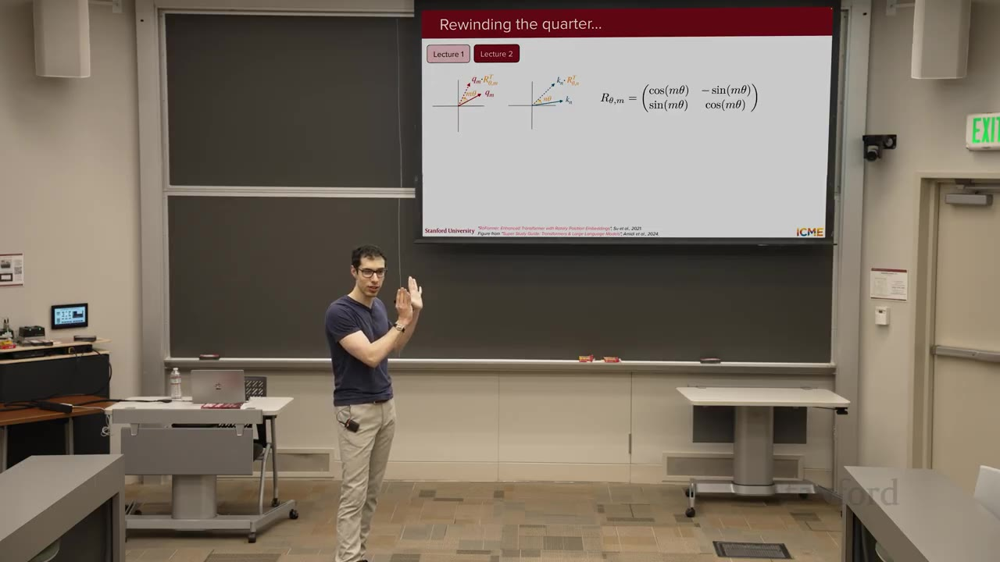
講義の要点。絶対位置embeddingと異なりRoPEはQueryとKeyを回転し、二者の内積が位置差を反映するようにする。GQA（Grouped-Query Attention）は多数のQuery headが少数のKey/Value headを共有し、品質とKV cacheメモリを折り合わせる。
位置を与えた同じattentionでも、どの方向のtokenを見せるかで役割が変わる。次の表は三形式を「見える範囲」と「主な仕事」で比較する。
| 形式 | 読む範囲 | 主な仕事 |
|---|---|---|
| Encoder-only（BERT） | 両方向 | 分類・embedding |
| Decoder-only（GPT） | 左側のみ | 次token生成 |
| Encoder–decoder（T5） | 入力全体＋生成途中 | 入力を別textへ変換 |
この表が示すのは優劣ではなく情報の見え方である。後のViTは分類に強いencoderの発想を、VLMと通常のLLMは生成するdecoderの発想を主に使う。
4. LLMの規模を使い切らない：MoEと確率的decoding
位置と構成が整っても、parameterを増やせば毎tokenで全計算を行うcostが問題になる。そこで講義は、能力を増やしながら稼働計算を抑えるMoEと、出力分布から選ぶdecodingを復習する。
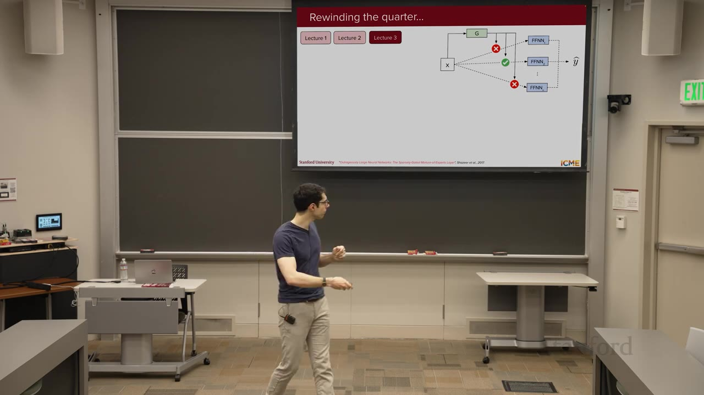
MoEは「modelが小さい」のでなくactive parameterが疎である設計である。temperatureも知識量のつまみではなく、同じ確率分布からの選択の広がりを変えるものだ。この計算・データの交換条件を次節で定量的に見る。
5. Scaling law：parameter、data、computeを同時に考える
前節の効率化を踏まえ、モデルを大きくすればよいという単純な見方を修正する。限られたcomputeでは、parameter数と学習token数を釣り合わせないとundertrainingになる。
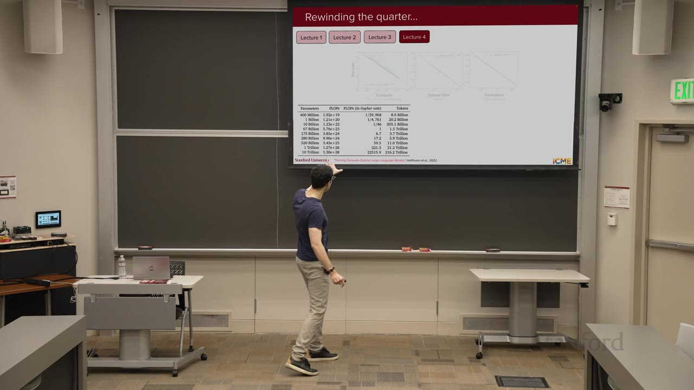
図表の読みは「大きいほど常に勝つ」ではない。固定予算でdataを不足させた巨大modelは、より均衡したmodel/data配分より悪くなり得る。続くFlashAttentionは、同じ学習目的をより少ないmemory movementで実行する工夫である。
6. FlashAttentionと分散学習：演算回数だけでは遅さを説明できない
compute-optimalな比率を選んでも、巨大modelをGPUメモリに載せ、attentionを動かせなければ学習できない。そこでこの節は、hardwareの階層と並列化を、後の専用hardware議論への伏線として説明する。
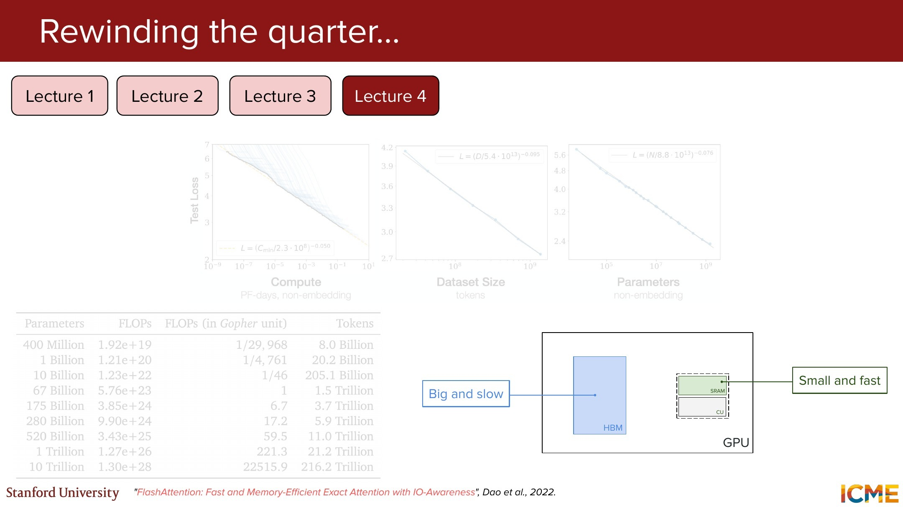
講義の要点。FlashAttentionは近似attentionではなくexactな結果を保つ。中間値を大量保存せず必要時に再計算し、遅いHBMへのread/writeを減らす。data parallelismはdataをGPUへ分け、model parallelismは一つのforward passを複数GPUで担う。
この図の教訓は「演算を増やしても速くできる」ことだ。bottleneckがFLOPではなくmemory movementなら、再計算は合理的になる。この発想は後半のanalog in-memory attentionまで連なる。
7. 三段階学習：能力、指示追従、選好を混ぜない
hardware上で学習できるようになったら、次はどんな信号で何を変えるかを分ける必要がある。pretrainingからpreference tuningへの順序は、後のreasoningを理解するための基準線になる。
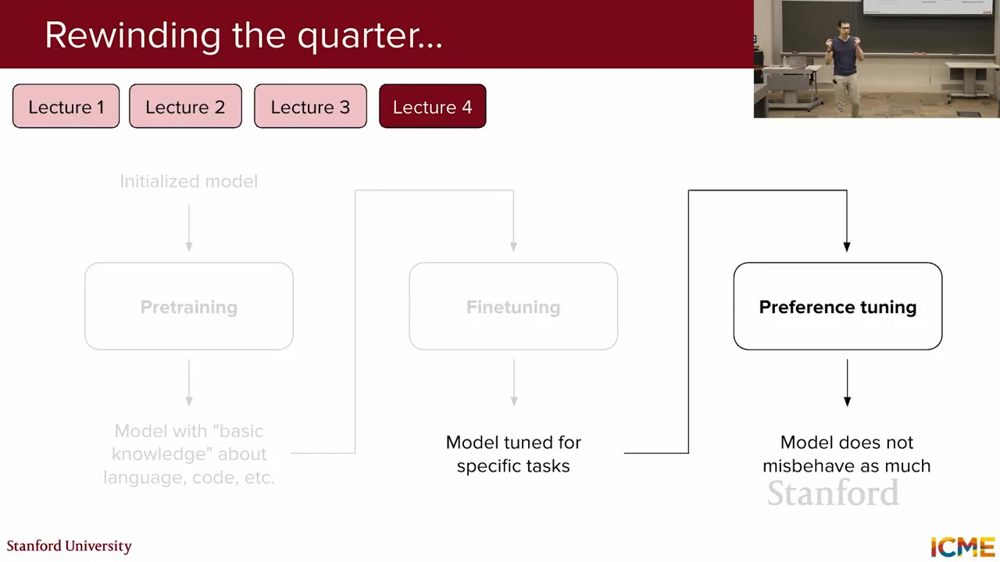
三段階を混同しないため、次の表では各段階のdataと、そこで主に変わる能力を対応させる。
| 段階 | 主なdata | 主に得るもの |
|---|---|---|
| Pretraining | 大量text/code | 次token予測、言語・知識の型 |
| SFT | 高品質な入出力対 | 指示追従、応答形式 |
| Preference tuning | 比較・選好 | 有用性、安全性、tone |
表は後段ほど「より高性能」になる順位表ではない。SFTだけでは望ましくない応答を比較対象として直接下げにくいため、第三段階は「何をしないか」を含む相対信号を加える。
8. RLHF：LLMをpolicyとして見て、選好を報酬へ変える
三段階の最後を理解するため、LLMのtoken生成を強化学習の言葉へ翻訳する。これはreasoningのGRPOへ自然に進むための共通語彙である。
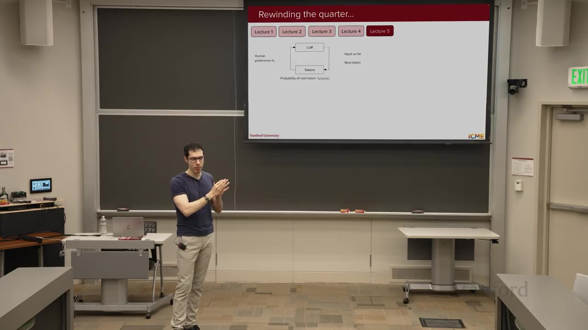
講義の要点。LLM=policy、input so far=state、next token=action、token集合=environment、human preference=reward。Bradley–Terryは二応答のscore差から「どちらを好むか」の確率を作り、pairwiseに訓練したreward modelは推論時に一応答へscoreを返せる。
rewardだけを最大化すると採点器の穴を突くreward hackingが起き得る。よってSFT referenceからのKL距離と、一更新前policyからの大き過ぎる更新を抑える。この「よい出力を増やす」と「既存能力を壊さない」の二目的が次節にも残る。
9. Reasoning：答えの前に推論chainを出し、検証可能な報酬で強化する
選好報酬を、数学の正解やcode testのような自動検証可能な信号へ置き換えると、より長い問題解決過程を学ばせられる。この節はPPOとGRPOの違いを、目的ではなくbaselineの作り方の違いとして読む。
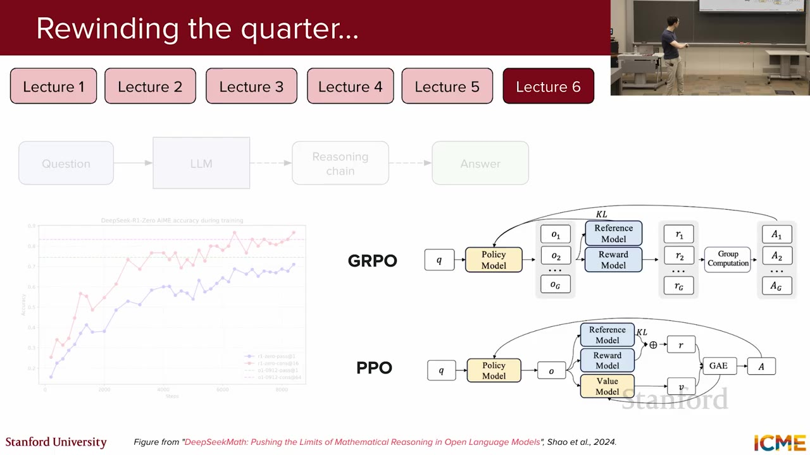
GRPOは「value model不要」が利点だが、元のlength正規化は短い誤答より長い誤答を弱く罰し得る。講義が挙げたGRPO Done RightやDAPOはその修正研究であり、方式名だけで性能を断定してはならない。
10. RAG：固定重みの外から、最新・私有の知識を読む
reasoningしても、model重みは日々更新されずknowledge cutoff後の情報を知らない。そこで行動させる前に、必要な根拠をpromptへ入れるRAGを導入する。
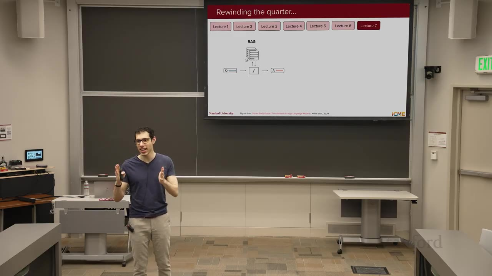
bi-encoderはquery/documentを別々にembeddingして高速に候補を取り、cross-encoder rerankerは両方を同時に見て精度良く順位付けする。top-k文書をpromptへaugmentして初めてgenerateに渡す。
この図が教えるのは、RAGがmodelの重みを更新しない外部知識経路だということだ。検索漏れ、誤順位、contextの誤用は最後のLLMが流暢でも残る。次節のtool callingは「読む」のではなく外部世界へ「作用する」経路である。
11. Tool callingとagent：答えるだけのLLMを、観測と行動のloopへ置く
RAGで情報を読めても、予約・検索・更新のような操作はできない。そこでLLMがtoolを選び、引数を構成し、仲介層が実行結果を返すagentic workflowへ進む。
図をクリックすると拡大できます。
図の重要点は、LLM自身がAPIを直接実行するのではないことだ。仲介層が許可、schema、結果を制御する。現代agentはRAGとtool callingを組み合わせるが、stepが増えるほどtool選択・引数・順序・統合のどこでも失敗し得る。
12. LLM評価：自然な文章を、明示したrubricで測る
外部接続まで持つsystemを評価するには、語面がreferenceと一致するかだけでは足りない。この節は、旧来metricの限界からLLM-as-a-Judge、そしてそのbiasへ進む。
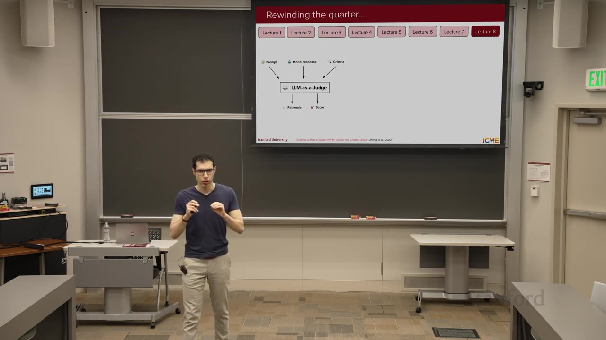
評価法は同じ品質を別の信号で近似する。次の表は、それぞれが実際に観測するものと、見落としやすい失敗を並べる。
| 方法 | 見ているもの | 講義での限界 |
|---|---|---|
| BLEU / ROUGE / METEOR | referenceとの文字列的重なり | 表現が違う正解を落とす |
| LLM-as-a-Judge | prompt、応答、criteria | position・verbosity・自己強化bias |
| 人手校正 | 評価の妥当性 | costと一貫性 |
表から得る結論は「judge LLMが人間を不要にする」ではない。候補順の入替え、明確なrubric、二値判定、そして人手による校正を組み合わせ、knowledge・reasoning・coding・safetyなど複数軸を測る。
13. 非textへ進む問い：Transformerは文字専用なのか
ここまでの復習を終え、講義は新規topicへ移る。self-attentionが扱うのは文字そのものではなくvector列なので、画像の部分もvectorにできれば同じ関係計算を試せる。この問いからViTが出る。
講義の要点。2017年のTransformerは機械翻訳から始まったが、弱いinductive biasとself-attentionは、十分なdataがあれば別modalityにも一般化できる。以後は「tokenを何にするか」が設計の中心になる。
14. Vision Transformer：画像をpatch token列として分類する
前節の問いを具体化し、画像分類をend-to-endで追う。CNNの局所filterを前提にせず、patch全体の関係をencoderで学ぶため、ViTはdata量との交換条件も含めて読む必要がある。
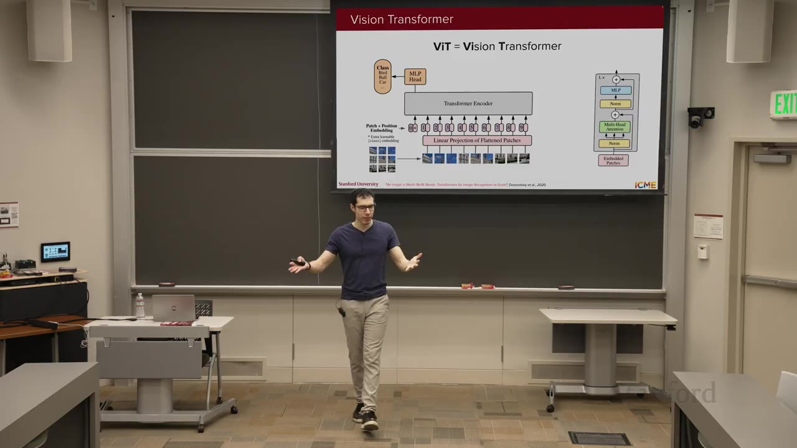
CLSは全patchとattentionした集約表現なので分類headに渡せる。CNNより低いinductive biasは少dataでは不利にもなり得るが、講義は大量画像dataを与えたViTが従来CNNを上回った点を強調する。
15. VLM：画像tokenとtext tokenを、回答生成へ結ぶ
ViTは画像をclassへ写すが、利用者は「何が写っている？」とtextで尋ねたい。そこで画像表現をLLMの生成過程へ結合するVLMを説明する。
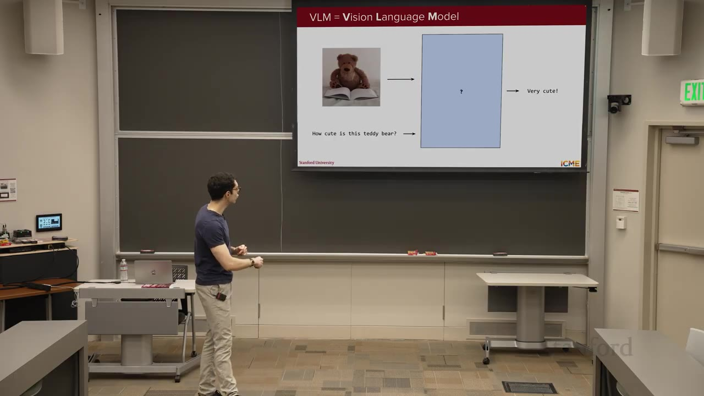
画像表現とtextをどこで融合するかには複数案がある。次の表は、講義で示された二方式を融合位置で見分けるためのものだ。
| 接続法 | 画像を置く場所 | 講義中の例 |
|---|---|---|
| 連結 | vision encoderのtokenをtext tokenと入力列へ連結 | LLaVA型 |
| cross-attention | text側がcross-attention層で画像を参照 | Llama 3論文の例 |
表は二方式が同じ「画像を読む」仕事でも、融合点が異なることを示す。講義では前者を典型例として紹介するが、採用構成や比率はmodel世代に依存する。Transformerは推薦・音声・Diffusion Transformerにも展開される。
16. 自己回帰生成の制約：trainingとinferenceを取り違えない
画像へTransformerを持ち出した後、講義は逆向きに、画像生成のdiffusionをtextへ持ち込む。動機は通常LLMのARM（autoregressive model）が生成時に一tokenずつ前の結果を待つ点にある。
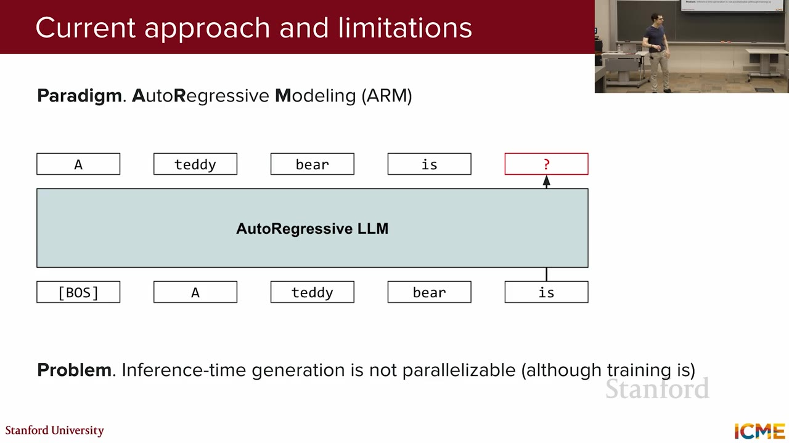
この区別が重要である。ARMを「並列化できないmodel」と書くのではなく、生成時の依存鎖がlatencyを作る、と書く。この制約がdiffusion-based LLMの研究動機になる。
17. 画像diffusion：noiseから目的分布へ戻る直観
離散textの方法へ飛ぶ前に、まず画像diffusionが何を模倣するのかを分けて理解する。画像は連続値なのでGaussian noiseを加え、除く変換を学びやすい。
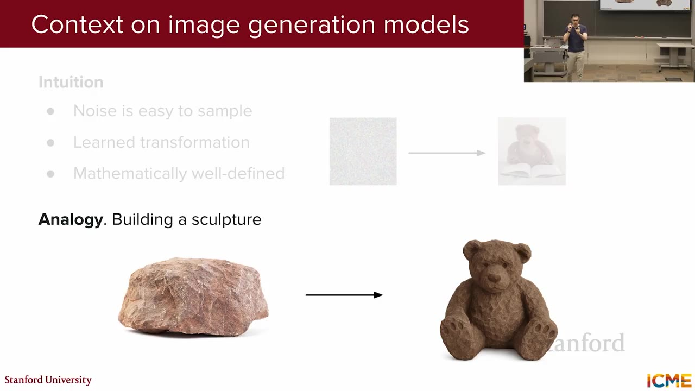
講義の要点。forward processはclean imageへ徐々にnoiseを加え、reverse processはnoiseを推定して取り除く。目標はnoiseからtarget image distributionへ至る変換を学ぶことだ。
q(xt|xt−1)はforwardの確率過程、pθ(xt−1|xt)はmodelが学ぶreverse遷移を表す慣例である。講義は数分の直観説明であり、ここで厳密なDDPM損失を講義内容として帰属させない。次節では連続noiseをそのままtext tokenへ足せないため、noiseに相当するものをMASKへ置き換える。
18. Masked Diffusion Model：離散tokenを全体から磨く
画像と違いtext tokenは離散値なので、前節のGaussian noiseをそのまま使えない。そこで講義は「画像のnoise：textのMASK」という対応で、forward/reverseを組み替える。
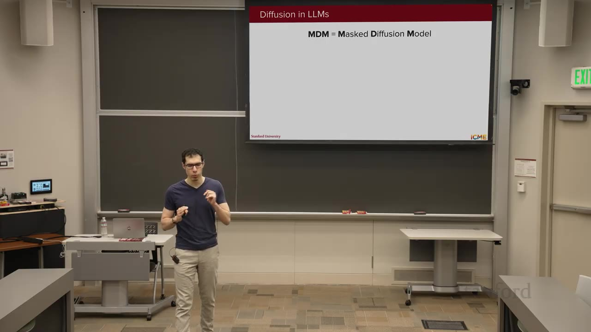
図をクリックすると拡大できます。
図が示すのは、MDMが左から右へ一語ずつ書くのではなく、全体を草稿から洗練させるように復元することだ。promptはconditioningとして残し、MASK側の回答を予測する。MDM/DLLMの呼称・notationはまだ定まっていない、と講師は注意した。
19. Diffusion LLMの期待と未解決点：速度は品質と交換する
MDMの復元手順をARMと比べ、何が速くなり、何がまだ研究課題かを明確にする。これは「新手法だから置換する」という結論を避けるための節である。
二方式の違いを速度の数字だけで判断しないよう、次の表では生成順、forward pass、得意領域、未解決点を同じ軸で比較する。
| 観点 | ARM | masked diffusion LLM |
|---|---|---|
| 生成 | 1 tokenずつ | 複数MASK位置を反復更新 |
| pass数 | 概ね出力token数 | diffusion step数へ抑える余地 |
| 期待用途 | 成熟した汎用生成 | 長文速度、fill-in-the-middle |
| 未解決 | 逐次latency | frontier品質、reasoning技法の移植 |
表は「常に10倍高速」と読むものではない。講義は長い出力でbenchmark上およそ10×の報告があると述べたが、step数、quality、task、hardwareに依存する。前後のcodeを同時に見られるfill-in-the-middleへの適性は、構造上の有望さである。
20. Cross-pollination：modalityが成功した概念を交換する
ViTとdiffusion LLMを並べた理由を、この節で一般原理へ戻す。研究の流れはtextからvisionへの一方通行ではなく、architecture、入力表現、position trickが相互に移る。
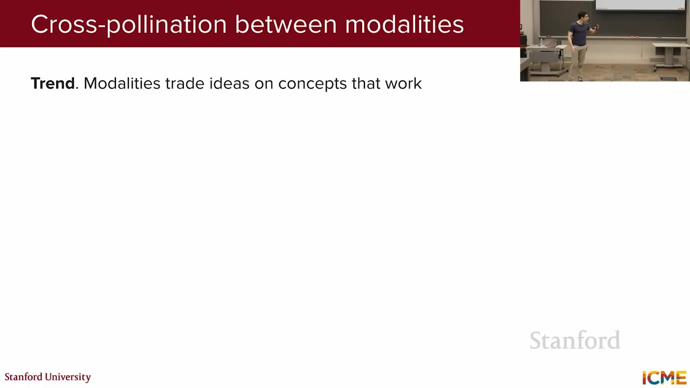
講師はDeepSeek-OCRを、単なるOCR精度改善ではなく、少数のvision tokenからtext tokenを復元できる表現圧縮の例として挙げた。またtext用RoPEは画像・multimodalでは2D座標へ拡張できる。重要なのは名称を移すことでなく、どのinformationをどのvector列にするかである。
21. 基礎設計は未確定：optimizerから層数まで再び問い直す
modality間の移植が進んでも、Transformer内部が完成版になったわけではない。ここでは「Transformerを使う」より細かい設計選択が現在も研究対象であることを整理する。
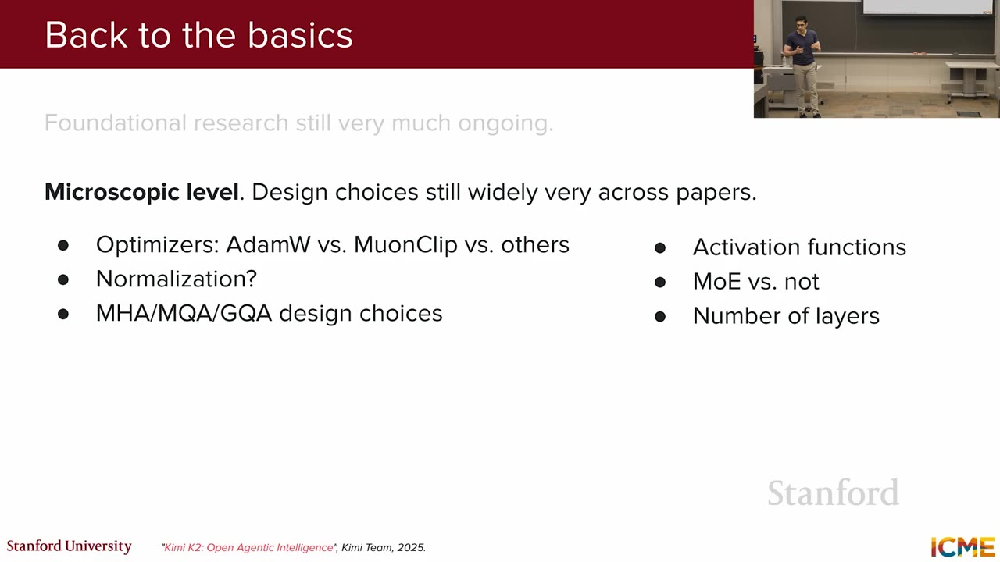
post-normからpre-norm、LayerNormからRMSNorm、ReLUからGELU系、MHA/MQA/GQA、dense/MoE、head数・FFN幅・層数まで選択は揺れている。これは「新名称が必ず勝つ」一覧ではなく、目的・data・hardwareに対する仮説の探索空間である。
22. Data品質：学習の「燃料」が合成文で痩せる問題
内部設計を改善しても、学習に与えるdataが偏ればmodelは豊かにならない。この節では、無選別なweb scrapeからcurationとmid-trainingへ移る理由、そして生成dataを再学習するmodel collapseの懸念を説明する。
Mid-trainingは、汎用pretrainingと用途別fine-tuningの間で、比較的大規模かつ高品質なcorpusを追加学習する段階である。講義はdata量だけでなく、専門性・信頼性・多様性を選別する重要性が増したと説明する。
Model collapseは、modelが作った低多様性のtextを次世代modelが繰り返し学ぶと、元dataの稀な特徴が失われ、出力分布が痩せていく懸念を指す。講師の「検索結果の80%がLLM生成かもしれない」という数字は問題規模を伝える口頭例であり、厳密な統計としては扱わない。dataを整えても、推論を提供できるcostでなければ社会へ届かないため、次節はqualityとcostの同時最適化へ進む。
23. Quality / cost Pareto frontier：最高点から、提供可能な最適解へ
前節では学習dataの質を扱った。ここでは完成したmodelを利用者へ届けるとき、性能、価格、latencyをどう同時に読むかを説明する。単一benchmarkの首位ではなく、用途ごとの交換条件が選択基準になる。
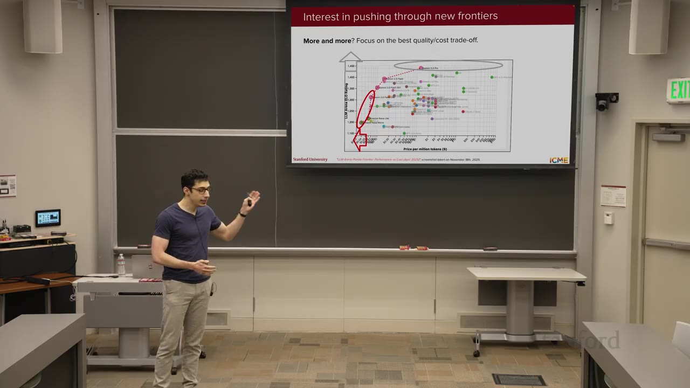
Pareto frontier上の点とは、qualityを上げようとするとcostも上がり、costを下げようとするとqualityも下がるため、どちらか一方を悪化させずには改善できない候補である。図の内側にある点は、同額以下で高品質な別modelに支配される。
この見方では、SLM（Small Language Model）も「能力が低い縮小版」ではなく、taskに十分な品質を低cost・低latencyで出す候補になる。講義は最上位modelの提供者でさえ高額planで赤字になり得るという話を挙げ、研究競争が最高scoreだけでなく、持続可能な推論へ移ると見る。次節は、このfrontierを物理層から動かすhardwareへ進む。
24. Hardware最適化：計算よりdata移動が高いなら、置き場所を変える
qualityとcostのfrontierを押し広げるには、model側の工夫だけでは足りない。FlashAttentionで見たmemory movementの問題へ戻り、KVを保存する場所とattention演算を近づける研究を読む。
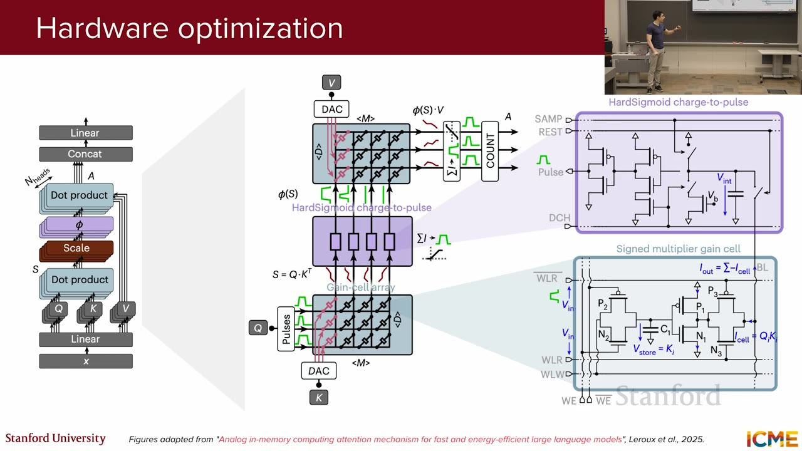
GPUはmatrix multiplicationに強いが、autoregressive生成では過去tokenのK/Vを繰り返し読み出す。このI/Oがbottleneckなら、memory cell内または近傍でdot productやscaleを処理するanalog in-memory computingに利点が生まれる。analogとは連続的な電圧・電荷・pulseなどの物理量を演算に使う方式である。
講義が紹介した「H100比で最大約100倍のlatency、約70,000倍のenergy改善」は、Lerouxらの研究におけるsimulationと特定前提の結果であり、汎用実機がその倍率で高速という意味ではない。図は回路の複雑さを暗記するためでなく、model architectureがhardware設計を逆に規定し始めたことを示している。次節では、この効率化がすでに変えた日常用途を見る。
25. すでに変わった日常：coding、assistant、創作、学習
hardwareまで含む効率化の目的は、実際の仕事や学習へmodelを届けることにある。この節では講師が「すでに変化した」とした用途を、価値だけでなく必要な検証と対にして整理する。
次の表は、用途を単なる便利機能として並べず、modelが担当する部分、人間が確認すべき部分、失敗時の影響を対応付ける。
| 用途 | LLMが担う部分 | 人間・system側の確認 |
|---|---|---|
| Coding / text-to-query | 実装案、SQL、修正候補の生成 | test、review、権限、rollback |
| Conversational assistant / web search | 質問理解、情報統合、説明 | 出典、鮮度、groundedness |
| Creativity | marketing文、構成、初稿 | 目的、独自性、権利、最終判断 |
| Learning | 概念のbrainstorming、対話的feedback | 教科書・一次資料との照合 |
表が示すのは、人間を一律に置き換える構図ではない。LLMは探索と初稿を高速化する一方、正しさや影響を保証する仕組みは用途ごとに異なる。自律stepを増やすほど便利さと失敗costが同時に増えるため、次節はagentの民主化と安全性を分けて扱う。
26. Agentの民主化と安全性：stepが増えるほど失敗は累積する
現在の用途から次に予想されるのは、技術者だけでなく誰もが自然言語でagentic workflowを組み、browserやOSまで操作させる世界である。この節では可能性と、権限を持つagent特有のriskを同じ流れで説明する。
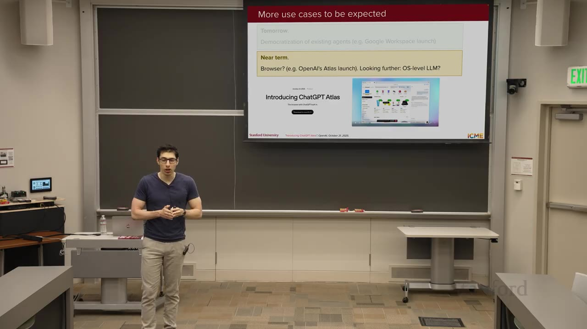
browser agentは、webページ内の命令を正規の指示と誤認するprompt injectionや、閲覧可能な秘密情報を外へ送るdata exfiltrationの危険を持つ。講師はChatGPT Atlasを当時の例として挙げ、将来は安全性を示す証明書のような仕組みも必要かもしれないと展望する。
さらに、固定重みをどう更新するかという継続学習、もっともらしい誤りを返すhallucination、personalizationとprivacy、内部判断のinterpretability、safetyは未解決である。hallucinationは単純な実装bugではなく、次token予測が事実検証そのものを目的にしていない設計上の性質とも関係する。未解決だからこそ、最終節では変化を追う具体的な学び方へ着地する。
27. 次の学び方：論文、実装、評価条件を往復して終える
未解決課題を並べるだけでは最終回の価値が閉じてしまう。そこで講師は、変化の速い分野で見出しを追うのでなく、一次資料と実装を往復する具体的な習慣を示して結ぶ。
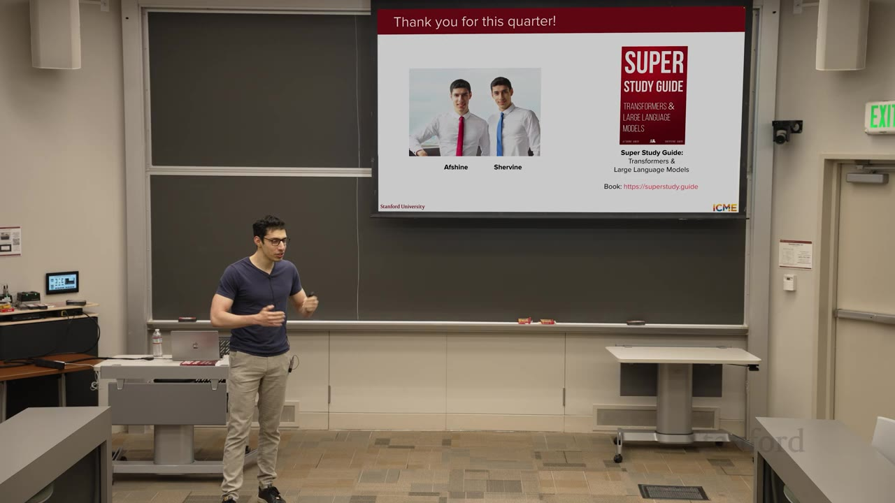
次の表は情報源の人気順ではなく、発見した主張を一次資料・実装・評価条件へ戻すための検証loopを表す。
| 入口 | 何を見るか | 読む際の問い |
|---|---|---|
| arXiv / NeurIPS / ICML / ICLR / ACL / EMNLP | 原論文 | 比較対象・data・評価条件は何か |
| 著者GitHub / Hugging Face Trending Papers | 実装とdataset | 主張は再現可能か |
| 企業・研究機関blog、解説動画 | 背景と実務文脈 | 一次資料へのリンクはあるか |
| VIP Cheatsheet / Super Study Guide | 講義の横断復習 | どの前提から導かれた概念か |
この表を上から一度読んで終えるのでなく、論文の主張を実装と評価条件へ戻し、別model・別hardware・別時点でも成り立つかを確かめる。Shervineは8年前には自宅で講義を見る側だったと振り返り、質問で講義を双方向にした学生とオンライン視聴者へ感謝した。最終的な持ち帰りは、流行語ではなく「表現、学習信号、推論cost、外部接続のどのtrade-offを動かしたか」を問い続けることである。
難所チートシート
- token：modelが処理する離散単位。text以外もvector列にすればattention対象になり得る。
- KV cache：既生成tokenのKey/Valueを保存し、生成時の再計算を避けるmemory。
- inductive bias：modelへあらかじめ埋めた仮定。CNNの局所性、ViTの弱い仮定の対比が例。
- ARM / MDM：前者は左から右への次token生成、後者はMASKを反復復元する拡散型の一群。
- Pareto frontier：他方を悪化させずperformanceまたはcostを改善できない候補の境界。
- hallucination：流暢なtoken予測が真偽検証を保証しないことから生じる、単純な「故障」とは言い切れない問題。
28. 復習の足場：関連講義と用語を、必要な場所へ戻す
学び方を示しただけでは、難しい概念に出会った読者がどこへ戻ればよいか分からない。この節はLecture 9を独立した要約で終えず、前提となる既存講義と用語を再訪するための索引として置く。
次の表は、Lecture 9で圧縮して再登場した話題を、より深く扱う既存レポートへ結ぶための道標である。
| 戻る先 | Lecture 9での役割 | 先に確認する問い |
|---|---|---|
| Lecture 4: LLM Training | scaling、FlashAttention、SFT | 学習costはどこで発生するか |
| Lecture 5: LLM Tuning | Bradley–Terry、RLHF、PPO | 選好をどの損失でpolicyへ返すか |
| Lecture 6: LLM Reasoning | CoT、GRPO、verifiable reward | 良い推論を何で検証するか |
| Lecture 7: Agentic LLMs | RAG、tool calling、安全性 | 外部知識・操作をどう統制するか |
| Lecture 8: LLM Evaluation | judge、benchmark、bias | 何を測り、どのbiasを校正するか |
この表は読み順を強制しない。Lecture 9で疑問になった部品へ戻り、再び「全体地図」のどこに接続するかを確認するための往復路である。
用語ミニ索引
- embedding：tokenやpatchを数値vectorにした表現。
- logit：softmaxで確率へ変換する前の生のscore。
- causal mask：生成位置が未来tokenを見ないようにするmask。
- CLS token：BERT/ViTで列全体を集約するための特別なtoken。
- cross-attention：一方の列をQuery、別の列をKey/Valueとして参照するattention。
- inductive bias：dataから学ぶ前にarchitectureへ埋め込む仮定。
- HBM / SRAM：大容量で遅いGPU memory / 小容量で高速なon-chip memory。
- rollout：promptからmodelが生成したcompletion全体。
- advantage：報酬がbaselineよりどれだけよいかを示す量。
- conditioning：生成をprompt、画像、既知tokenなどで条件付けること。
- model collapse：低多様性の生成dataへの反復学習で分布が痩せる懸念。
- groundedness：応答が根拠・外部事実に結び付いている性質。